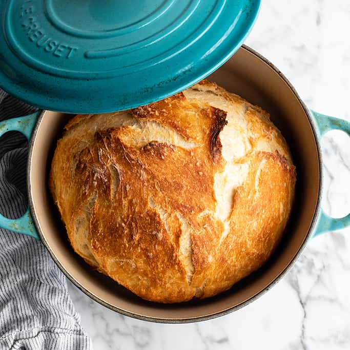

Dutch Oven Bread
HOME
ABOUT

Ingredient
- 2 Cups Warm Water
- 2 1/4 tsp Dry Instant Yeast
- 4 cups Bread Flour
- 1 1/4 tsp Salt
Directions
-
Stir in Dry Instant Yeast to 2 cups
of warm (100 F to 120 F) Water and let sit until foamy.
-
In a large mixing bowl, combine 4 cups of Bread Flour
and 1 1/4 tsp of Salt. Once thoroughly combined
add foamy yeast mixture. Mix until a dough forms.
-
Form dough into a generaly ball shape and let rest for 2 hours or until
doubled in size. Fold the dough several times and let set 2 more hours
or until doubled again.
-
After second rise, preheat the oven to 450 F with the empty dutch oven.
Form the dough into its final shape and let rise for 1 hour in a grease
bowl while dutch oven heats up.
-
Place dough into hot dutch oven and let cook, with the lid on for 30 minutes.
Then remove the lid and let cook for another 15 minutes.
-
Remove from the oven and let cool for 10 minutes.
-
Enjoy!